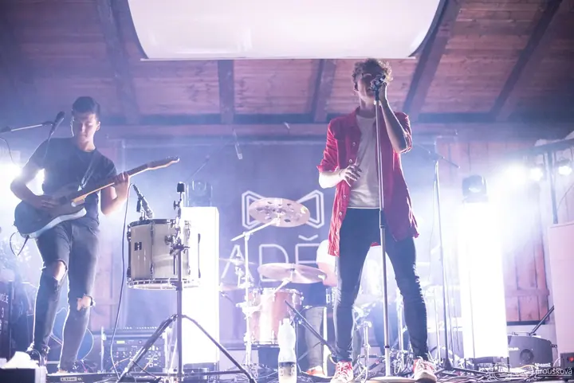
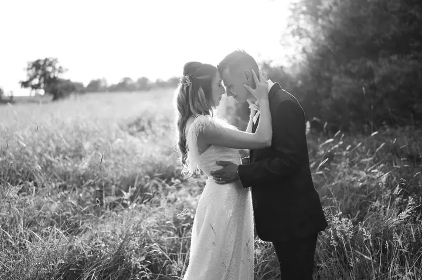
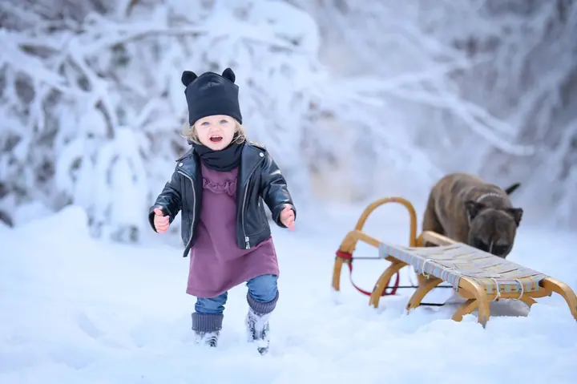

jedna
Svatby
Fotím půldenní i celodenní svatby, od ranních příprav po večerní zábavu. Nijak nenaruším váš velký den, a přitom pečlivě zdokumentuji všechny důležité chvíle.

Svatební a rodinná fotografka · Opava, Moravskoslezský kraj

Jmenuji se Lucie Jiroušková a fotografování se věnuji přes deset let. Fotím svatby, rodiny s dětmi i pejsky v Opavě a v Moravskoslezském kraji. Nejraději mám přirozené momentky bez strojených póz.
Více o mně
Co fotím
jedna
Fotím půldenní i celodenní svatby, od ranních příprav po večerní zábavu. Nijak nenaruším váš velký den, a přitom pečlivě zdokumentuji všechny důležité chvíle.
dvě
Ať už chcete vyfotit jen svého zvířecího kamaráda, nebo budete na snímku spolu, společně to vymyslíme.
tři
Uchovejte si vzpomínky na to, jak vaše ratolesti rostou. Právě na nich je vidět, jak rychle čas utíká.
Proč si nenechat udělat vlastní portrét? Se mnou to zvládnete hravě a ještě si to užijete.

Žádné strojené pózy, jen skutečné momentky.

Za objektivem
Fotografování se věnuji přes deset let a pořád mě moc baví. Fotím svatby, páry, rodiny s dětmi, portréty i pejsky, ať už sami, nebo se svými lidmi.
Při focení se snažím zapadnout a být přirozená, aby fotky nepůsobily strojeně. Nejraději fotím momentky, proto vás nebudu celou dobu aranžovat. Spoustu fotek dělám také v černobílé variantě.
U svateb ráda pomůžu i s přípravou. Poradím s harmonogramem dne z pohledu fotografa a pomůžu vybrat kameramana, DJ nebo kosmetičku. A pokud máte představu o nějakém speciálním focení, napište mi ji a společně se domluvíme.
Lucie
Napište mi nebo zavolejte. Probereme vaši představu na osobní nebo online schůzce a balíček klidně upravíme podle vás.
U svatby vám poradím s harmonogramem dne. Předsvatební focení je skvělá zkouška, při které se s foťákem sžijete a ve velký den už to půjde samo.
Zapadnu mezi vás a fotím hlavně přirozené momentky. Nijak nenaruším průběh dne, a přitom nevynechám nic důležitého.
Do tří dnů po svatbě vám pošlu malou ochutnávku. Celý upravený výběr dostanete do 6 až 8 týdnů v dřevěné krabičce s flashdiskem a vyvolanými fotkami.
Portfolio
Fotografie jsou ilustrační
Otázky
Čím dřív, tím líp. Některé termíny mám rezervované i rok dopředu.
U půldenního focení minimálně 100 upravených fotografií, u celodenního od 600. Každá svatba je jinak dynamická, takže jich může být i víc, a ty se už nijak nedoplácejí.
Prvních pár fotek vám pošlu do tří dnů po svatbě. Všechny ostatní ode mě dostanete do 6 až 8 týdnů.
Když si nevíte rady, zvolte základní barvy jako černou, bílou, šedou nebo béžovou. Vyhněte se nápisům, výrazným vzorům a obrázkům, odvádějí pozornost od vás. Při skupinovém focení se barevně slaďte.